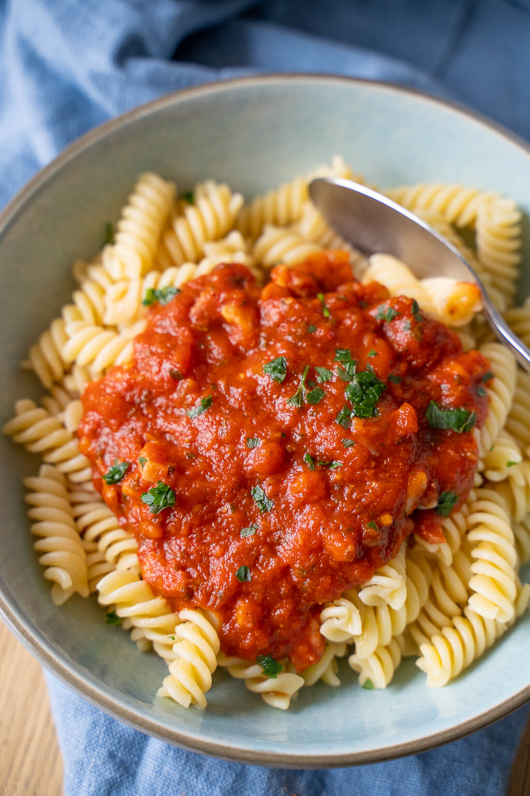

Noodles with tomatosauce

Description
Noodles with tomatosauce is a very basic dish but it is very tasty and you can
change a lot of things like the type of sauce or you could put some cheese on it to make it more interseting.
Ingredients for one person
- Noodles (100g)
- A bit of salt
- 1 liters of water
- Tomatosauce
- Some cheese if you want to
Steps
- Boil the water
- Add a bit of salt
- Cook the noodles as long as it is written on the packaging
- If the noodles have 1-2 minutes cooking time left warm up the sauce in the microwave
- After the noodles are finished poor out the water, put the noodles on a plate and pour the tomatosauce over them
-
optional put some cheese or/and basilicum on top of the noodles